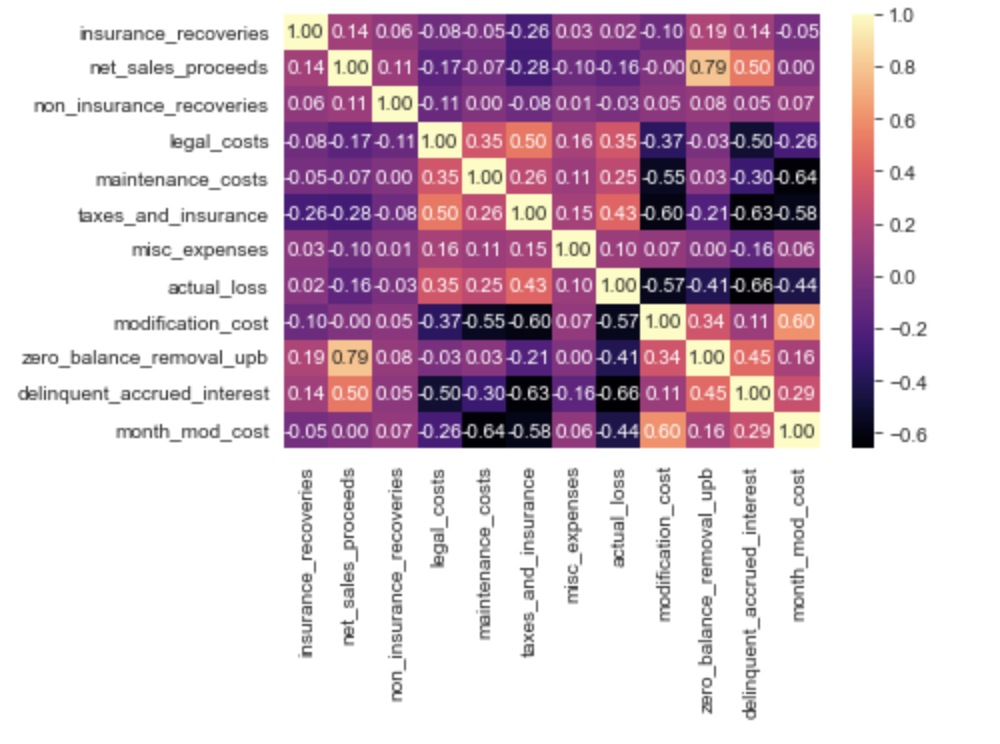
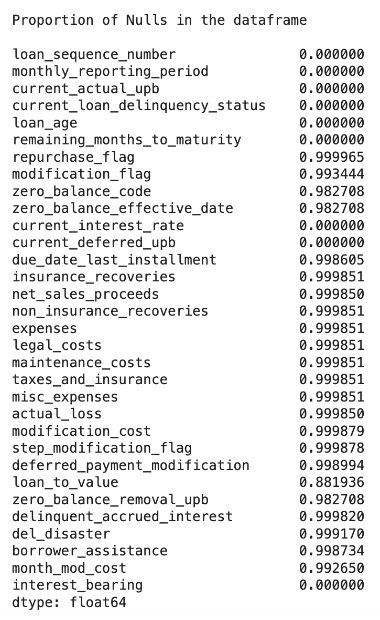

Data Used During This Project
The team utilized the Freddie Mac Single-Family Loan-Level dataset, which is regulated and updated by the US’s Federal Housing Finance Agency (FHFA). There is data for about two decades, which are broken down by quarter. The three main advantages of using this dataset is the data quality, quantity, and accessibility.
For each quarter, there are two datasets that need to be utilized. The Origination Data file encompasses the loan-level origination details for all loans originated in the quarter. The Monthly Performance data file includes credit performance and actual loss information for each loan on a monthly basis. The data spans from the loan’s acquisition by Freddie Mac until the termination event, or Performance Cutoff Date, which represents the last period of performance data available for any loan in the dataset. Each loan in the origination data file is assigned a unique Loan Sequence Number. The corresponding monthly performance data file may include multiple records with the same Loan Sequence Number, indicating the monthly performance periods associated with a specific loan.
Analyzing the Data in the Columns
Before creating the model, the data was thoroughly analyzed to gain better insight on the different features present. Given the dataset’s extensive size, a sample was used for a majority of the analysis.
The distribution of each of the numerical columns was plotted to determine the range of the values, as well as checking for outliers. In addition, it helped determine the skewness and symmetry of the data. Subsequently, a heat map was generated to determine the correlation between the numerical columns.
Taking Care of Null Values
Most of the data analysis involved dealing with the extensive amount of null values in select columns.
A decision the team had to make was whether to drop these columns or impute them later on during the model development process. The tricky part about dropping columns based on perceived irrelevancy is the fact that null values in one column can be dependent on values in another column. To check for such dependencies within the columns, a chi square goodness of fit test was conducted. The columns that were unrelated to the others and had a large number of null values were disregarded during the model training process, which helped it up due to the decrease in data size.